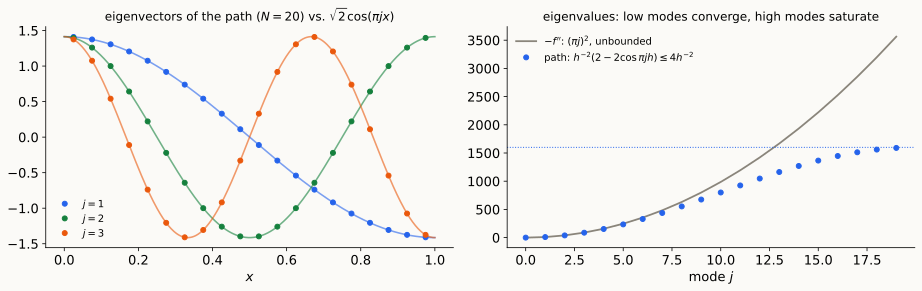
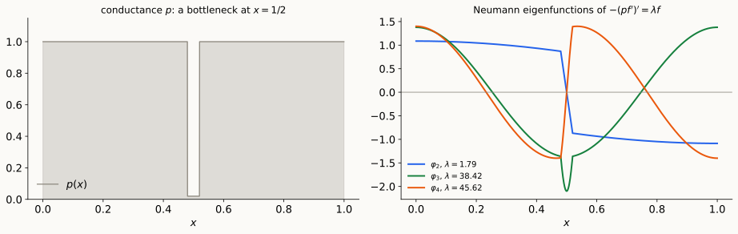

The continuum limit of the weighted path,
and the spectral theory of second-order operators on an interval
Today: the simplest case, one dimension. The weighted path graph becomes a Sturm–Liouville operator \(-(pf')'+qf=\lambda rf\), whose spectral theory is as complete as that of a symmetric matrix.
\(N\) cells of width \(h=\frac1N\) on \([0,1]\), centers \(x_i=(i-\frac12)h\), edge weights \(h^{-2}\) (Lecture 2 notes): \[(Lf)_i=\frac{2f_i-f_{i-1}-f_{i+1}}{h^2}\ \longrightarrow\ -f''(x_i).\]

The limit operator \(T=-\frac{d^2}{dx^2}\) on \(L^2([0,1])\) (LA Review II, §8):
On \([a,b]\), with \(p\in C^1\), \(p>0\), \(r>0\), \(q\) continuous: find \(\lambda\) and \(f\ne0\) with \[-(pf')'+qf=\lambda\,rf,\] plus separated boundary conditions \(\ \alpha_af(a)+\beta_ap(a)f'(a)=0\), \(\ \alpha_bf(b)+\beta_bp(b)f'(b)=0\) (regular problem).
Theorem. For a regular Sturm–Liouville problem:
Simplicity. If \(f,g\) are eigenfunctions for the same \(\lambda\), both satisfy the boundary condition at \(a\), so their Wronskian vanishes there; \(p\,(fg'-f'g)\) is constant (Abel), so it vanishes everywhere: \(f\propto g\). (Fails in higher dimensions and on graphs: multiplicities.)
Min–max (Courant–Fischer, as in LA Review I): \[\lambda_k=\min_{\dim S=k}\ \max_{f\in S\setminus0}\ R(f),\qquad R(f)=\frac{\int pf'^2+qf^2}{\int rf^2}.\]
Sturm comparison. Let \(-(pu')'+qu=\lambda ru\) and \(-(pv')'+qv=\mu rv\) with \(\mu>\lambda\). Between any two consecutive zeros of \(u\) there is a zero of \(v\).
Proof. Let \(x_1<x_2\) be consecutive zeros of \(u\), with \(u>0\) on \((x_1,x_2)\), and suppose \(v>0\) there. Then \[\Big[p\,(u'v-uv')\Big]_{x_1}^{x_2}=(\mu-\lambda)\int_{x_1}^{x_2}r\,u\,v\ >\ 0,\] but the left side is \(p(x_2)u'(x_2)v(x_2)-p(x_1)u'(x_1)v(x_1)\le0\) since \(u'(x_2)\le0\le u'(x_1)\). \(\square\)
Discretize: edge \((i,i+1)\) gets conductance \(c_{i+\frac12}=\frac{p(x_{i+1/2})}h\), vertex \(i\) gets mass \(m_i=r(x_i)\,h\): \[\sum_ic_{i+\frac12}(f_{i+1}-f_i)^2\approx\int pf'^2,\qquad\sum_im_if_i^2\approx\int rf^2 .\]
| weighted path graph | Sturm–Liouville |
|---|---|
| vertex measure \(m_i\) (degrees, \(\pi\)) | density \(r(x)\) |
| conductance \(c_{i+\frac12}\) | coefficient \(p(x)\) |
| edges to ground | potential \(q\) / Dirichlet condition |
| no boundary term (Neumann built in) | boundary conditions = self-adjoint extension |
| \(M^{-1}K\) (\(=L_{rw}\) for \(m=d\)) | \(\frac1r\big(-(p\,\cdot\,')'+q\big)\) |
| end-to-end \(R_{\rm eff}=\sum_i\frac1{c_{i+1/2}}\) | \(\int_a^b\frac{dx}p\) |
| \(L^+\), effective resistances | Green’s function \(G\) |
| Fiedler vector monotone | \(\varphi_2\) has one zero |
| heat kernel \(e^{-tL_{rw}}\) | \(e^{-tT}\) (compact for \(t>0\)) |

For \(-f''\) on \([0,1]\) with \(N\) cells, \(\ \theta=\pi jh\): \[\frac{\mu_j}{(\pi j)^2}=\frac{2-2\cos\theta}{\theta^2}=1-\frac{\theta^2}{12}+O(\theta^4).\]
Next time: spectral collocation. Sample at Chebyshev points and differentiate the interpolating polynomial: eigenvalues converge exponentially fast in \(N\) for smooth coefficients, and a constant fraction of the \(N\) modes come out accurate.
Reading: LA Review II §§6–8; Teschl Ch. 5.
| Object | Definition |
|---|---|
| Sturm–Liouville | \(-(pf')'+qf=\lambda rf\) on \([a,b]\), \(p,r>0\); separated boundary conditions |
| Hilbert space, operator | \(L^2([a,b],r\,dx)\); \(\ Tf=\frac1r\big(-(pf')'+qf\big)\) |
| Lagrange identity | \(\int\big(g(pf')'-f(pg')'\big)=\big[p(gf'-fg')\big]_a^b\) |
| Rayleigh quotient | \(R(f)=\frac{\int pf'^2+qf^2}{\int rf^2}\) (Neumann/Dirichlet) |
| Green’s function | \(G(x,y)=u_a(x_<)u_b(x_>)/C\), \(\ C=p(u_a'u_b-u_au_b')\) |
| spectral theorem | \(\lambda_1<\lambda_2<\dots\to\infty\) simple; \(\{\varphi_k\}\) ONB of \(L^2(r)\) |
| oscillation | \(\varphi_k\) has \(k-1\) zeros; consecutive zeros interlace |
| Weyl | \(\lambda_k\sim\big(k\pi/\int\sqrt{r/p}\big)^2\) |
| path graph | \(c_{i+\frac12}=p(x_{i+1/2})/h\), \(m_i=r(x_i)h\); \(\ \mu_j=h^{-2}(2-2\cos\pi jh)\) for \(p=r=1\) |